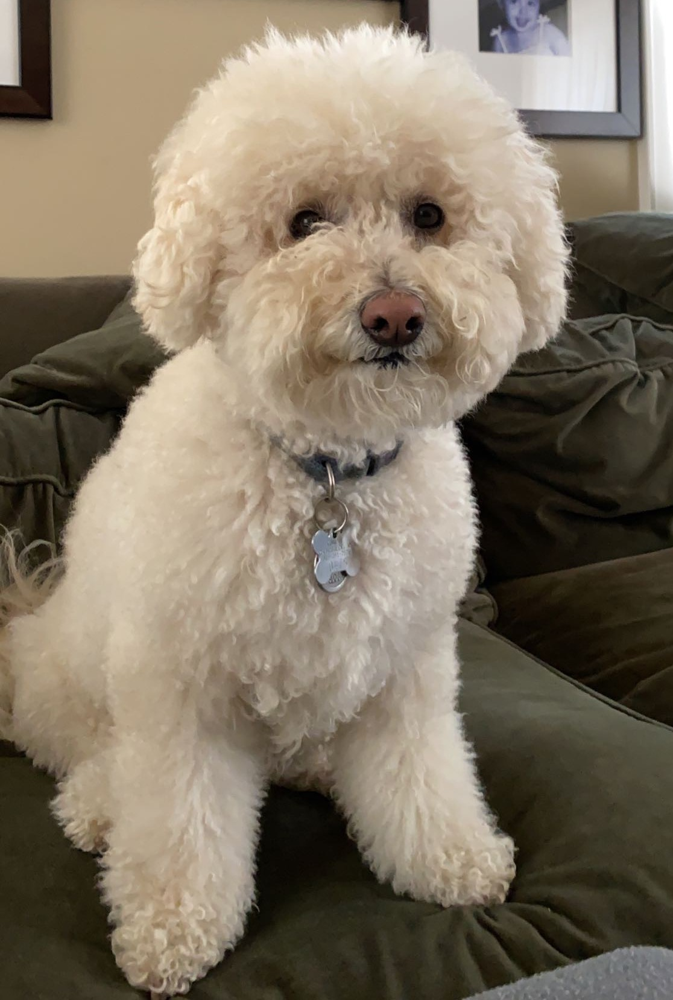
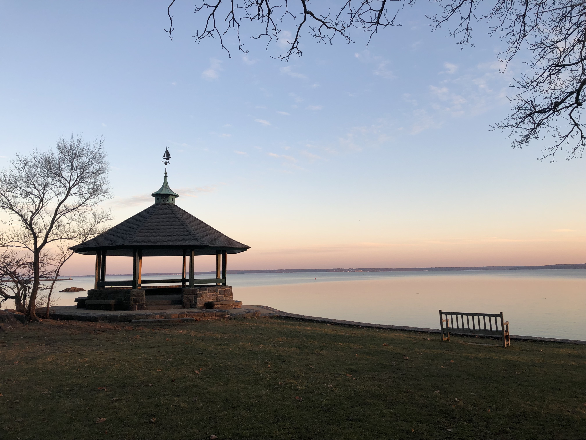
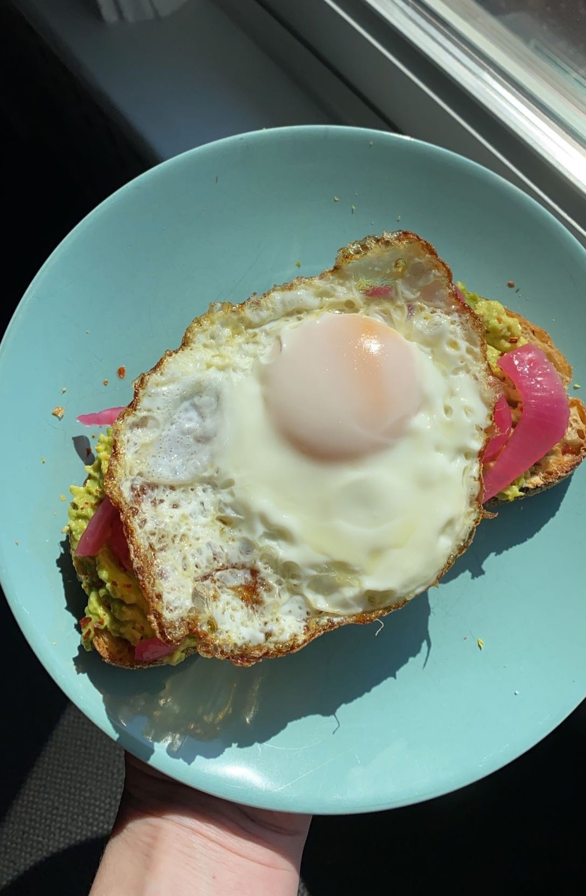
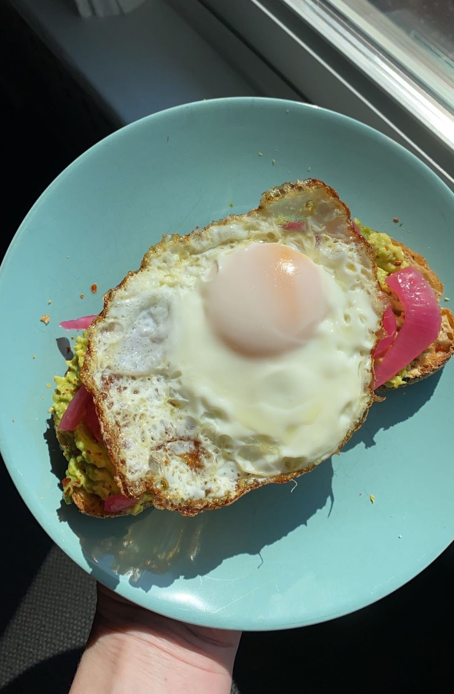
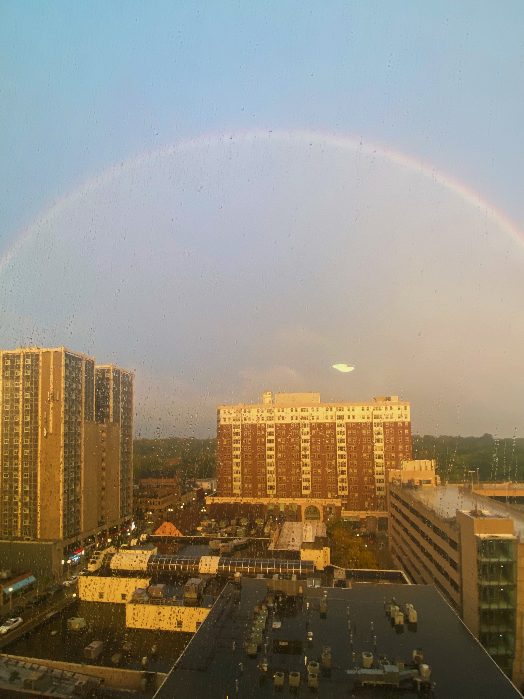
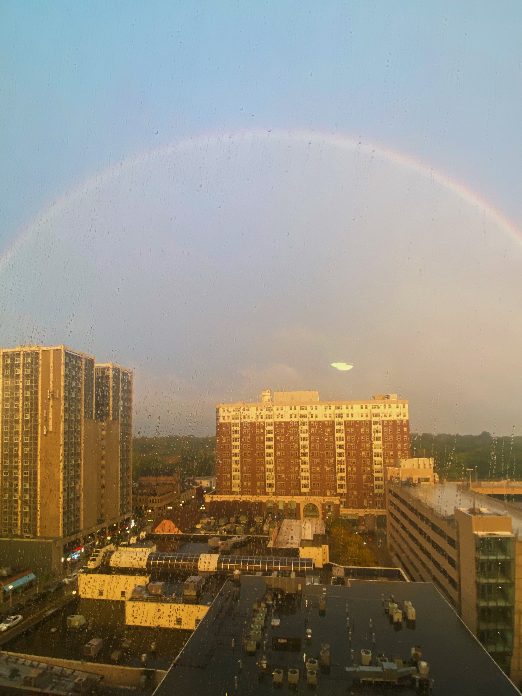

Ava Frank
About Me
Student at the University of Michigan
Hi! My name's Ava and I'm a current junior at the University of Michigan majoring in Information Sciences. I am originally from Larchmont, New York. I'm interested in exploring issues at the intersection of people, information, and technology and being able to find creative solutions to problems. Take a look at my various experiences and skills if you'd like to learn more!
I'm from Larchmont, New York (about 30 minutes from the city) and attended Mamaroneck High School. I've always had a passion for solving problems and creative thinking, two things my Information Science major allows me to further explore. Outside of this, I enjoy exploring new coffee places, going on long walks, playing tennis, and spending time with my family and dog! I also enjoy cooking, doing fun art projects, and taking photos of rainbows and pretty sunsets which are all shown on this page.
This portfolio wesbite was made for my web design class. It is still a work in progress that is constantly being changed so please excuse any mistakes that have been made! I hope it is useful in gaining more insight into the various experiences I have.
  


 
